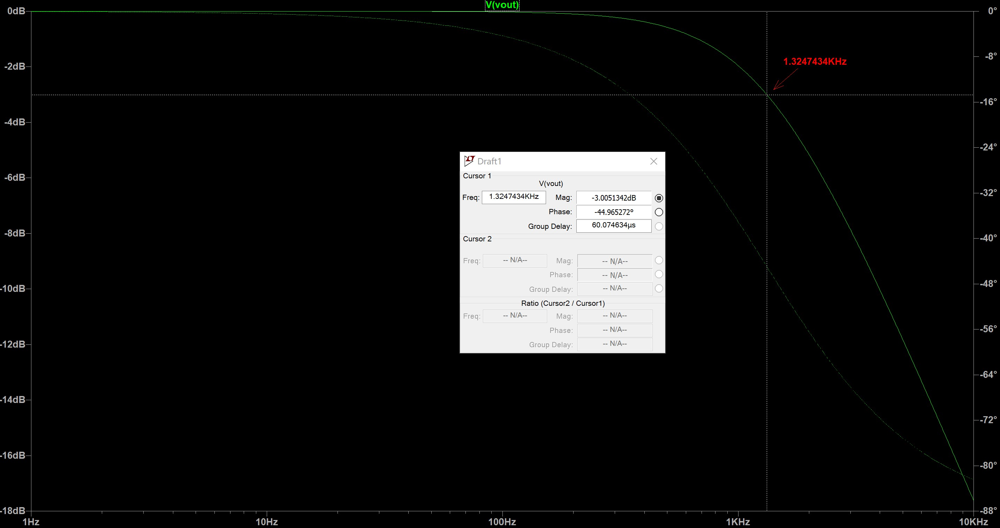
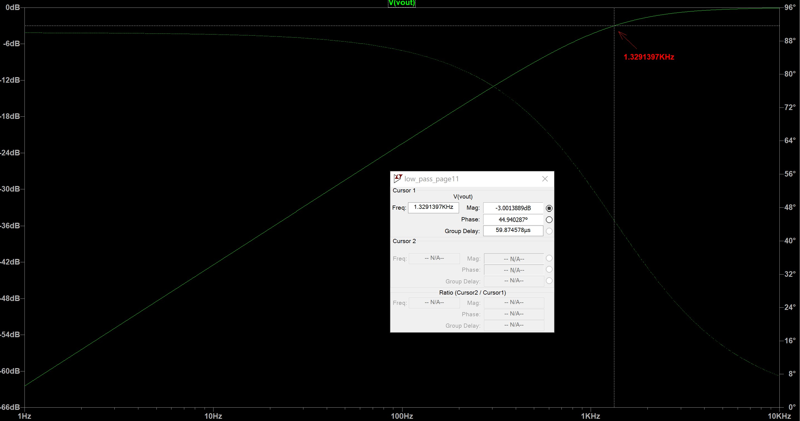

Objectives:
- Learn Some LTSpice Basics: simulate lowpass, highpass and bandpass passive filters.
- Build the basic microphone circuit and test it with MATLAB and the Nano.
- Build the amplifier microphone circuit and test it with MATLAB and the Nano.
- Implement a filter, characterize it and compare its frequency response to our simulation result.
- Test the amplified microphone circuit only on the Nano (FFT on the Nano).
- Characterize our circuit and adapt the code for the Final Demo.
Materials:
- Robot
- Capacitors and resistors for amplifier and filter
- Jumper wires
- 1 x 9V battery and snap connector
- 1 x LM358 op-amp
- lab computer with speakers
Procedure:
1. Learn Some LTSpice Basics
In order to simulate the behavior of filters, we used LTSpice.
The low pass RC circuit with R=1.2kΩ and C=0.1μF and its simulation:
The high pass RC circuit with R=1.2kΩ and C=0.1μF and its simulation:
